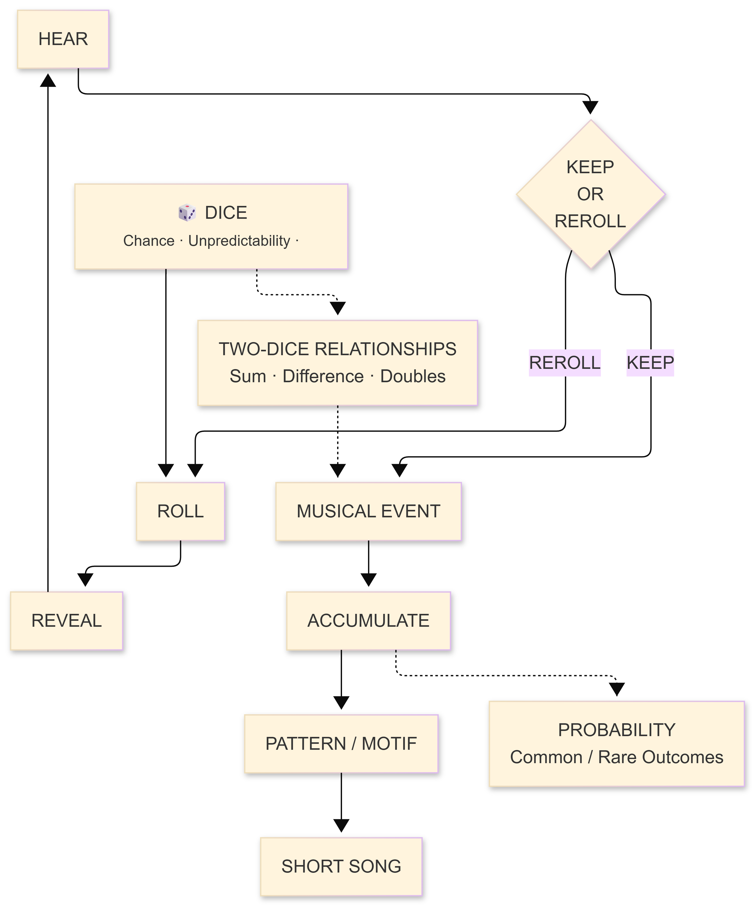
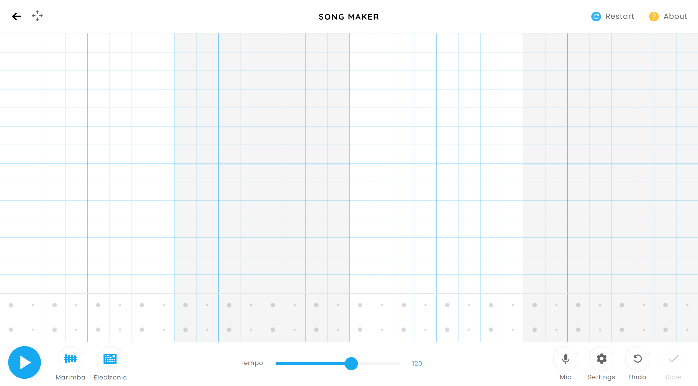
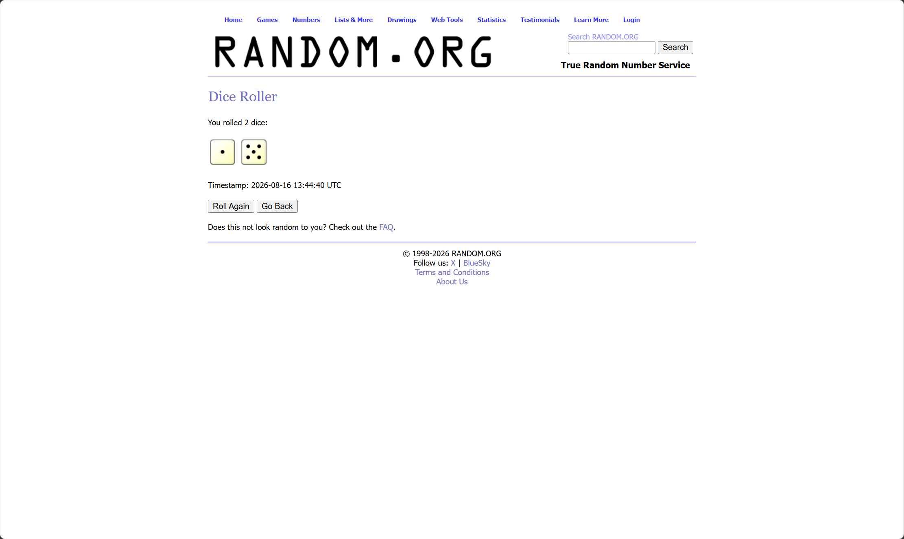
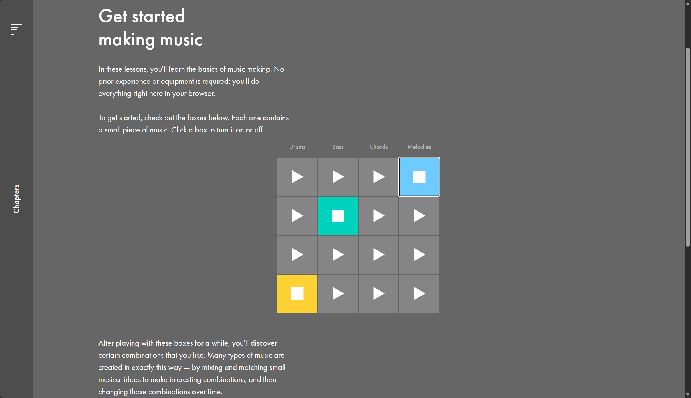
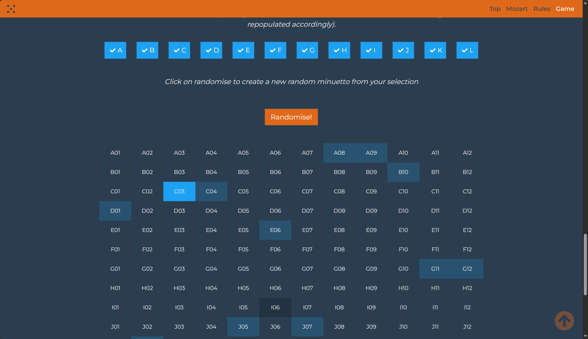

Design Scheme Purpose and Response
The starting point for this project is simple: I want to build a browser-based interactive toy. The user "uses" it to do something. For me, what makes a project like this good or not doesn't depend on how technically complex it is—it depends on whether the interaction itself makes people want to keep playing.
My initial idea was to work with playing cards. What interested me was the infinite possibility contained in a small deck: numbers, suits, combinations, and the decisions involved in choosing which cards to play, keep, or discard. The cards themselves are relatively simple, but the relationships between them form a more complex system. A number doesn't mean much on its own; its meaning comes from how it can be combined with other numbers, and from what the player is trying to achieve.
The more I thought about how to translate this idea into a single-player interactive scenario, the more I realized that a lot of the appeal of card games comes from the concept of playing against an opponent. Traditional card games require another player, while Balatro replaces the player with goals, scores, opponents, and increasingly complex conditions. Without those elements, the interaction can easily become little more than drawing cards and hunting for combinations. I could still use numbers, suits, and calculation to generate music, but I started to question why cards were necessary at all.
That brought me back to dice. Dice have fewer properties than playing cards, but they have one quality that is much more direct: unpredictability. The act of rolling dice already contains a complete interaction in itself. The user knows what might happen, but can't predict the exact outcome. This doesn't require another player, a complicated scoring system, or a sprawling game structure. The user isn't playing against an opponent—they're making decisions around probability.
This feels closer to the kind of interaction I'm interested in: taking a familiar real-world action and translating it into a digital system, where the action itself becomes meaningful, rather than just being a button that triggers an effect.
Project Overview
At the core of the project are two dice. The user rolls them and gets a pair of numbers. Rather than mapping each number directly to a fixed note, the system interprets the numerical properties and relationships between the two dice, and translates them into musical behavior.
The dice determine the immediate outcome, but the user decides what to do with that outcome. After rolling, the user can either accept the result, or feel that it could be better and roll again. This creates a decision: is this result good enough to keep, or is it worth the risk of rolling once more? A good result gives the user a reason to stop, while an unsatisfying one gives them a reason to continue.
I specifically want to use two dice rather than one. Two dice are a familiar physical object in themselves, but more importantly, they introduce relationships between numbers. If one die shows 2 and the other shows 5, the system can consider their sum, their difference, whether they are close, whether they match, and how they relate to previous rolls. These numbers don't have to be treated as two separate values. The relationship between them can become the actual material for the output.
Two dice are important because they establish a relationship, rather than just generating a single random value. For example, a result like 2 and 5 can be interpreted through their sum, difference, distance, equality, or their relation to previous results. These attributes might influence pitch, register, rhythm, duration, intervals, repetition, or other musical parameters. During the prototyping phase, the specific mappings will remain open, because the system needs to be judged by how it sounds and feels, not just by whether the mathematical mapping makes logical sense.

The core interaction currently envisioned is:
Roll the dice → listen to the result → decide whether to keep it or roll again → accumulate accepted results into a piece of music.
The key moment is the decision after the roll. If the system simply generated a random sound every time the user pressed a button, it would become a random music generator. Allowing the user to accept or reject unpredictable outcomes introduces an element of risk and agency. The user can't fully control what the dice show, but they can decide which results become part of the final piece.
The final output should be small and refined, rather than an endlessly looping generative system. A sequence of accepted random numbers can gradually evolve into a short musical piece. The intention is similar to the underlying ideas mentioned earlier. But the final work should feel like something the user has made themselves.
Framing
The starting point for this project is not to build a random music generator. If the system simply translated each dice roll into a sound mechanically, the user would quickly lose interest—they'd realize they're just pressing a "generate random notes" button that happens to look like dice. What truly interests me is that brief moment after the result appears but before the decision to accept or reject it. There is a subtle tension in that moment: you know you can't control the result, yet you are genuinely making a meaningful choice.
This feeling reminds me of the tension in gambling games—not because I want to build a gambling simulator, but because that moment of decision before the outcome is revealed is emotionally charged. I want to preserve that tension, but redirect its outcome toward music rather than money or points. In other words, the user is not "composing"—they are betting on a melody, and then deciding whether it is worth keeping.

I have also thought about the physicality of the dice themselves. Dice are more attractive than a software random number generator because they have weight, shape, the sound when they settle, and the trajectory as they roll. These physical properties obviously cannot be fully replicated in a digital interface, but I want to preserve that sense of "throwing" as much as possible in the interaction—through a click or drag to trigger a roll, then waiting for the result to appear. This process itself carries a suspended anticipation.Physicality matters to me, but I don't plan to simulate it through 3D rendering. Instead, I want to translate the feeling of 'throwing' into interaction the user initiates a roll, waits briefly, and receives a result. That pause, that anticipation, is the digital equivalent of dice settling." If the moment of rolling can carry a subtle collision sound, and if the corresponding pitch plays immediately after the dice settle, then the entire interaction forms a complete loop in both hearing and sight.
Regarding the accept or reject decision mechanism, I want it to carry real weight. The user cannot re-roll indefinitely, otherwise risk ceases to exist and the decision loses its meaning. What specific constraint to use—such as limiting to three re-rolls, or having the cost of accumulated results change after each re-roll—these will need to be explored and adjusted during prototyping. But the core intention remains unchanged: every roll should be an event the user takes seriously, not a casual button press for amusement.
Musical Mapping
I don't want the dice to merely control visual shapes or generate random abstract images. A short piece of music feels like a more concrete outcome: it can accumulate over time, ultimately becoming a game between the user and their choices.
The numerical properties of the dice can influence various aspects of music—not just mapping one number to one note. One value might affect pitch or register, another might affect duration or rhythm, and the relationship between them could determine intervals, harmony, repetition, or other musical expressions. The project will explore specific mappings through prototyping experiments using Tone.js.
This is also where I can learn from Balatro. Balatro doesn't try to be similar to other games. The key isn't numbers on cards. Rather, when players begin to discover various relationships and combinations that produce unexpected results, simple numerical systems become interesting. I want to apply this sense of discovery to music rather than to scores.

Therefore, a roll like 2 and 5 shouldn't just mean "play note 2 and note 5." The system might interpret their relationship as a musical event. Repetitive or unusual relationships might gradually form changes in the overall composition. Users might start to realize that certain types of rolls tend to produce specific types of sounds, but still can't be completely certain of the next outcome.
This is actually quite similar to my previous work with translation. Between Typing—but the source of unpredictability is different. In Between Typing, the user's typing behavior becomes musical material. Here, the user's choices based on chance also become musical material. The user doesn't directly compose every note, but their choices determine which unpredictable events ultimately remain in the piece.
Interacting Design Analysis
Example 1: Chrome Music Lab / Song Maker
Chrome Music Lab demonstrates how musical interaction can be achieved through direct manipulation rather than traditional music software. Its Song Maker experiment allows users to create and share songs, and the project as a whole aims to make music more accessible through hands-on browser-based practice. It uses web technologies to let users create a complete, small-scale work with strong musical feedback through simple interactions.

What matters most is not its visual style, but its ability to make musical structure understandable through interaction. Users can make changes and hear results immediately.
For the dice game, this means that each roll's result should not disappear after sounding, but should become part of an accumulating musical structure. Users should eventually realize that a series of discrete interactions have formed a complete piece, rather than a sequence of unrelated sounds.
Example 2: RANDOM.ORG Dice Roller
RANDOM.ORG provides an interesting contrast because its dice roller is almost entirely focused on randomness. Users select the number of dice and roll them to get results. Its information design is extremely simple—the skin of a pure random number generator.

Its interface demonstrates that randomness as a concept can be conveyed with minimal interaction. The project treats randomness as the starting point of interaction, not the final result. Treating randomness as the entire experience is also its greatest weakness—once the result is revealed, people have no reason to continue paying attention.
RANDOM.ORG also makes the mathematical patterns of dice interesting. Using two six-sided dice, certain combinations appear more frequently than others. This allows probability itself to be incorporated into the musical system—for example, letting common combinations produce more familiar or recurring works, while rare combinations produce less frequent ones.
The core of the dice project should be what happens after the roll—randomness is the starting point of interaction, not the endpoint. I need to ensure users have a reason to linger, think, and decide after each roll. If users treat it like RANDOM.ORG—roll and leave—the project has failed.
Example 3: Ableton Learning Music
Ableton's Learning Music is particularly relevant to this project's musical structure because it allows users to experiment with music directly in the browser, with no experience or equipment required. The entry interaction starts with small, toggleable musical components, encouraging users to explore combinations they enjoy. The feature then separates beats, basslines, chords, and melodies while keeping them synchronized, enabling users to build more complex works from simple parts.

The useful principle here is layering—simple interactions don't have to stay simple. Small musical events can accumulate into larger structures, and users can understand the system through experimentation rather than prior learning.
This supports the dice project's layered development strategy. The first prototype should be very simple: two dice, one roll, one musical response. Once this interaction is pleasing, additional layers can be built on top—the relationship between numbers, the accept/re-roll decision, repeating patterns, probability, musical themes, and eventually a clear ending that creates a complete short piece.
The key difference is that Ableton gives users direct control over musical elements, while the dice project deliberately introduces uncertainty. So this project combines Ableton's accessible layering with the unpredictability of dice.
Example 4: Musical Dice
Musical Dice is a modern web recreation of the 18th-century Musikalisches Würfelspiel (musical dice game). The historical game used dice to randomly select combinations from pre-written musical fragments to "generate" music—essentially using dice randomness for collage-style composition.

The value of this project is that it provides an entirely different frame of reference. Unlike RANDOM.ORG, Musical Dice's starting point is not "pure randomness" but structured randomness. Every result from a roll corresponds to a pre-written musical fragment that is guaranteed to connect smoothly with others. So no matter how they are combined, the result always sounds "complete."
Musical Dice reinforces my conviction that relationships are more interesting than fragment collage. Its logic is: roll dice → select a preset fragment → assemble. What I want to do is: roll dice → two numbers' relationship → generate musical behavior. The former depends on the quality of preset material; the latter depends on the design of mapping rules. I believe the latter has more room for exploration, because it is not permutation of fixed fragments, but generating something new from numerical relationships.